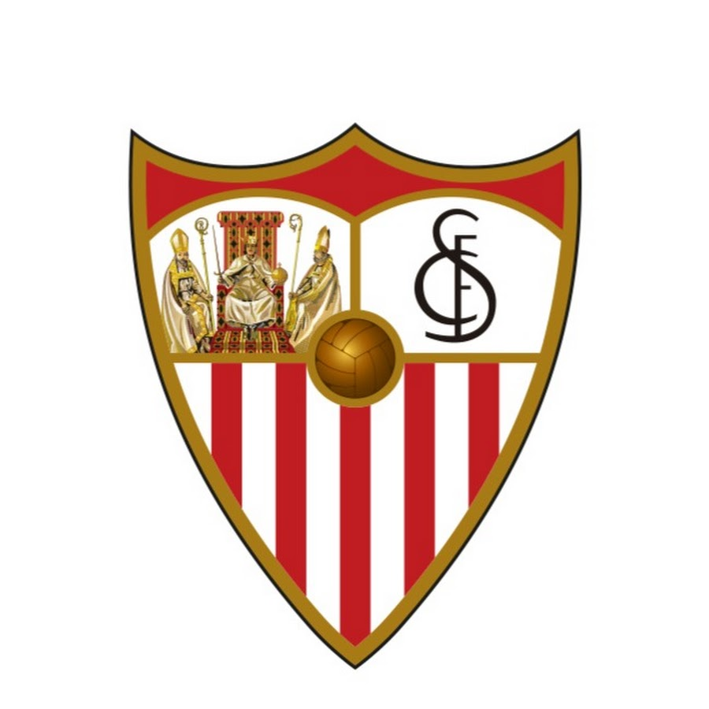
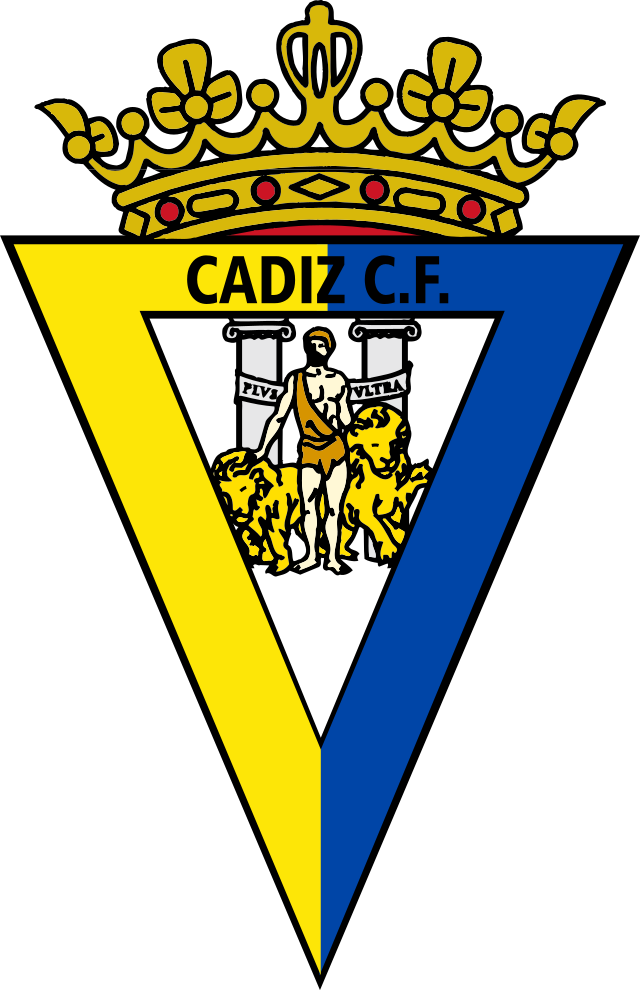
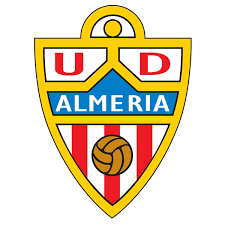

Filtrar por división:
Sevilla F.C

Real Betis Balompié
Cadiz C.F

U.D Almería

- 3 RFEF : 5ª División
LaLiga 23 Temporadas seguidas en la máxima categoría

LaLiga 10 Temporadas seguidas en la máxima categoría
LaLiga2 Recien descendidos a la categoría de plata
LaLiga2 Recien descendidos a la categoría de plata